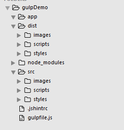
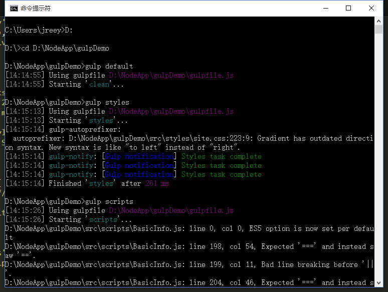
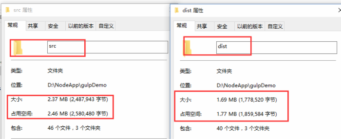

开发工具
Gulp压缩前端CS,JS,图片文件
Gulp基于Node.js的前端构建工具，Gulp有许多插件（这里是插件），使用Gulp可以实现前端代码的编译（sass、less）、压缩、图片的压缩等，当然主要是前端工程化，不过我目前只是需要压缩文件就，至于Grunt，相比于Gulp太慢了，Gulp API；
假如有个本地目录，如下图：

环境：
Windows，安装 Node
安装Gulp:
1，全局安装，执行：npm install gulp -g
2，本地目录安装，cmd 到你的项目根目录，执行： npm install gulp --save-dev
安装插件：
- 自动添加css前缀（gulp-autoprefixer）
- 压缩css（gulp-minify-css）
- js代码校验（gulp-jshint）
- 合并js文件（gulp-concat）
- 压缩js代码（gulp-uglify）
- 压缩图片（gulp-imagemin）
- 自动刷新页面（gulp-livereload）
- 图片缓存，只有图片替换了才压缩（gulp-cache）
- 更改提醒（gulp-notify）
- 清除文件（del）
执行：npm install gulp-autoprefixer gulp-minify-css gulp-jshint gulp-concat gulp-uglify gulp-imagemin gulp-notify gulp-rename gulp-livereload gulp-cache del --save-dev
加载插件：
在根目录创建 gulpfile.js
// 引入 gulp及组件
var gulp = require('gulp'),
autoprefixer = require('gulp-autoprefixer'),
minifycss = require('gulp-minify-css'), //压缩css
jshint = require('gulp-jshint'), //js代码校验
uglify = require('gulp-uglify'), //压缩JS
imagemin = require('gulp-imagemin'), //压缩图片
rename = require('gulp-rename'), //合并js文件
concat = require('gulp-concat'),
notify = require('gulp-notify'),
cache = require('gulp-cache'),
livereload = require('gulp-livereload'),
del = require('del');
建立任务：
// Styles
gulp.task('styles', function() {
return gulp.src('src/styles/*.css')
.pipe(rename({ suffix: '.min' }))
.pipe(minifycss())
.pipe(gulp.dest('dist/styles'))
.pipe(notify({ message: 'Styles task complete' }));
});
// Scripts
gulp.task('scripts', function() {
return gulp.src('src/scripts/**/*.js')
.pipe(jshint('.jshintrc'))
.pipe(jshint.reporter('default'))
.pipe(concat('main.js'))
.pipe(rename({ suffix: '.min' }))
.pipe(uglify())
.pipe(gulp.dest('dist/scripts'))
.pipe(notify({ message: 'Scripts task complete' }));
});
// Images
gulp.task('images', function() {
return gulp.src('src/images/**/*')
.pipe(cache(imagemin({ optimizationLevel: 3, progressive: true, interlaced: true })))
.pipe(gulp.dest('dist/images'))
.pipe(notify({ message: 'Images task complete' }));
});
// Clean 任务执行前，先清除之前生成的文件
gulp.task('clean', function(cb) {
del(['dist/assets/css', 'dist/assets/js', 'dist/assets/img'], cb)
});
// Default task 设置默认任务
gulp.task('default', ['clean'], function() {
gulp.start('styles', 'scripts', 'images');
});
监听文件:
// Watch
gulp.task('watch', function() {
// Watch .scss files
gulp.watch('src/styles/**/*.css', ['styles']);
// Watch .js files
gulp.watch('src/scripts/**/*.js', ['scripts']);
// Watch image files
gulp.watch('src/images/**/*', ['images']);
// Create LiveReload server
livereload.listen();
// Watch any files in dist/, reload on change
gulp.watch(['dist/**']).on('change', livereload.changed);
});
然后在 cdm执行任务就可以了，例如：压缩css执行 [ gulp styles ]，等待执行完成，你就可以在dist目录下找到压缩好了的文件，如下图

看看压缩后和压缩前的大小：

还是很给力的吧。
windows 下删除 node_modules 文件夹会提示源路径太长无法删除什么的，找到个方法
在gulpDemo 下新建个空文件夹，随便命名
然后cmd 进入gulpDemo，输入命令： Robocopy /MIR r node_modules
等待命令执行完，时间可能有点长，然后删除空文件夹即可。